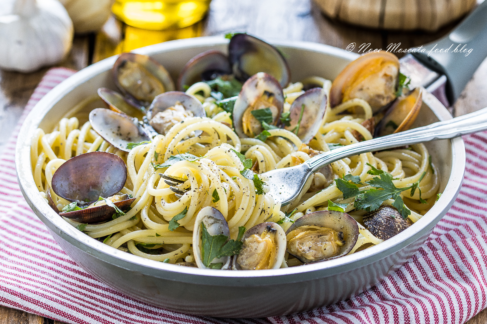

Spaghetti con le vongole

The most used Christams recipes in the south of Italy
Going even by the name of "Spaghetti ai Frutti di mare" or "Scialatielli" ,the"Spaghetti con le Vongole"
is one if not THE ONE recipe always on every Italian table during Christmas eve.
Ingredients - four people
- Spaghetti 320 g
- Clams 1 kg
- 1 clove garlic
- Parsley, 1 bunch
- Extra virgin olive oil
- Black pepper
- Salt
- Coarse salt for the clams
Steps
- Before preparing the spaghetti with clams, drain the clams in sea water or in cold water and salt for at least 12 hours. After the necessary time has elapsed, drain and pass them again again with cold water. Tap the cones on a plane to make sure there is no more sand. Put the clams in a pan with the garlic and white wine over high heat, let the alcohol evaporate, then seal with a lid until the clams are completely open. It will take about 3 minutes. Drain them and recover the water (sauce) obtained which you will filter and keep aside.
- Brown the garlic with a little chilli pepper over low heat, add the clams, the previously filtered water and season for a few minutes.
- Finely chop some parsley. Cook the spaghetti in salted water and remove them al dente so as not to risk them overcooking in the pan.
- Drain the spaghetti and put them in the pot with the clams, mix for a few seconds, serve hot with a sprinkle of pepper and parsley.